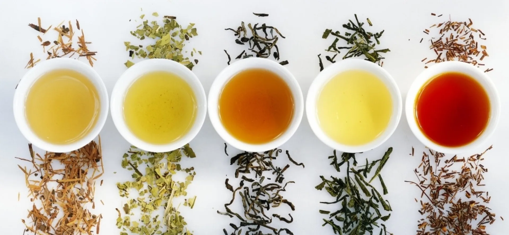
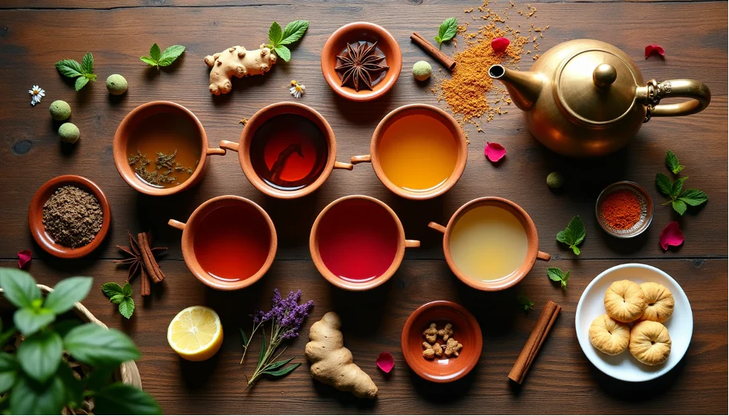
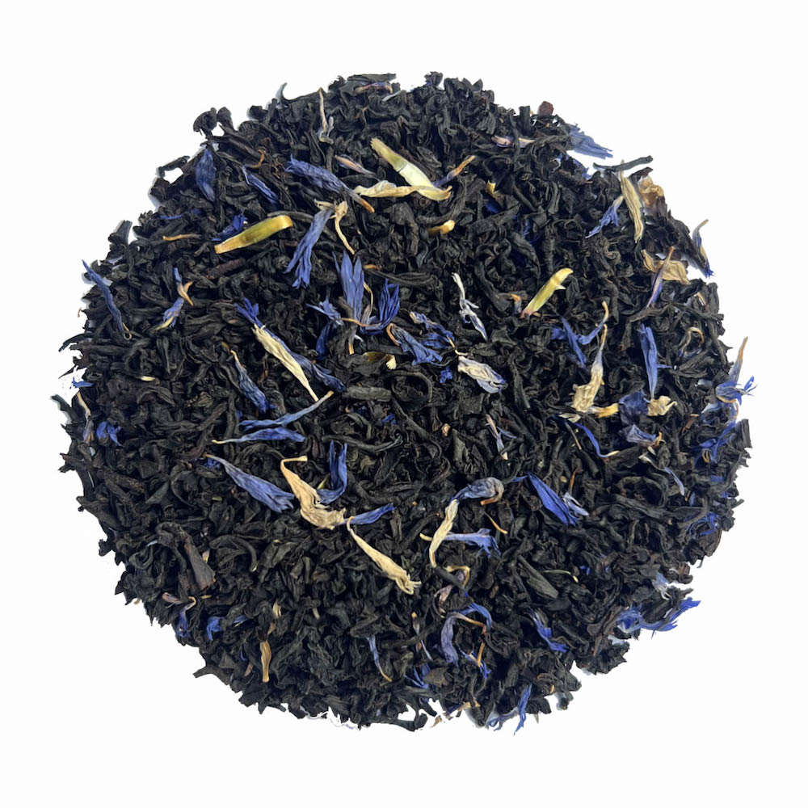
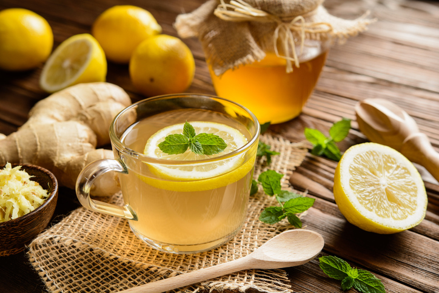
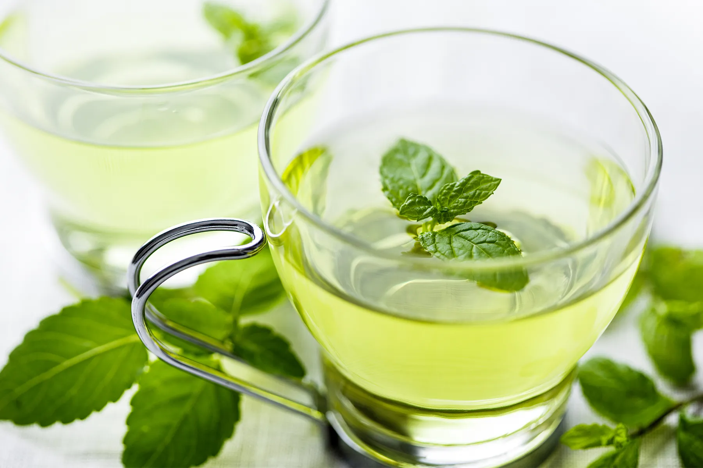
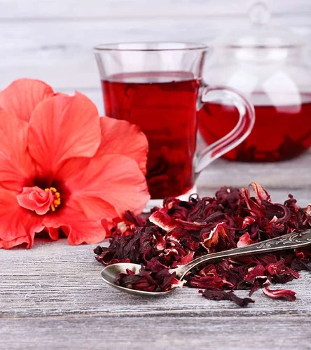

Flavoured Tea
Ceylon's bold black tea base meets the world's finest natural ingredients — spices, fruits, flowers, and herbs — creating beloved blends enjoyed across the globe.
100+
Flavour Variants
3–5 min
Brew Time
90–95°C
Water Temp
Natural
Ingredients Only
When Ceylon Tea Meets the World
Flavoured tea is the art of combining Ceylon's exceptional black, green, or white tea base with natural botanicals, aromatic spices, tropical fruits, dried flowers, herbs, and citrus peels, to create blends that are more than the sum of their parts.
Sri Lanka's flavoured teas are celebrated worldwide because the Ceylon base is so clean, bright, and assertive that it carries additional flavors beautifully without losing its own character. Unlike teas from other origins that can taste muddy or muted when blended, Ceylon tea holds its own, creating harmonious, vibrant combinations.
From the warming comfort of a Masala Chai to the exotic brightness of a Citrus Earl Grey, or the cooling freshness of a Mint Green blend, Ceylon flavoured teas span the entire spectrum of human taste preference, making them the most gifted and the most gifting of all tea categories.

Six Signature Ceylon Flavoured Teas
Each blend starts with Sri Lanka's finest highland tea and is paired with the most compatible natural flavour to create something truly memorable.

Masala Chai
The king of flavoured teas. Ceylon's robust black tea is blended with ground cardamom, cinnamon, ginger, cloves, and black pepper. Warming, aromatic, and deeply satisfying — best brewed with milk and a little sweetness.
Key Ingredients
Cardamom · Ginger · Cinnamon · Cloves · Pepper

Earl Grey Ceylon
The world's most famous flavoured tea reimagined with Ceylon's bright highland black tea. Cold-pressed bergamot oil from Calabrian citrus adds a fragrant, citrusy floral dimension that elevates the natural briskness of Ceylon beautifully.
Key Ingredients
Bergamot Oil · Cornflower Petals · Citrus Peel
Jasmine Green
Ceylon highland green tea is layered overnight with fresh jasmine blossoms, absorbing their heady fragrance naturally. The result is one of the most romantic teas in the world — light, floral, and hauntingly beautiful with every sip.
Key Ingredients
Fresh Jasmine Blossoms · Highland Green Tea

Lemon Ginger
Bright, invigorating, and immune-boosting. Sun-dried lemon peel and pieces of dried ginger root are blended into Ceylon black tea, creating a tangy, warming cup that is both energizing and soothing, perfect year round, hot or iced.
Key Ingredients
Lemon Peel · Dried Ginger Root · Lemongrass

Peppermint Green
Dried peppermint leaves are combined with Ceylon's delicate highland green tea to create a cool, refreshing blend that is especially glorious served cold over ice in summer. Clean, crisp, and deeply refreshing, a natural digestive too.
Key Ingredients
Peppermint Leaves · Spearmint · Ceylon Green Tea

Rose and Hibiscus
A visually stunning and deeply aromatic blend. Dried rose petals and vibrant hibiscus flowers are woven into Ceylon white tea, creating a tea that turns a beautiful deep pink when steeped — floral, slightly tart, and naturally sweet.
Key Ingredients
Dried Rose Petals · Hibiscus · Ceylon White Tea
Flavor, Aroma and Character
Taste
Varies enormously by blend. Spiced teas are warming and bold; floral teas are gentle and sweet; citrus blends are bright and tangy; herbal blends are soothing and clean. The Ceylon base always provides a structured, reliable foundation.
Aroma
Flavoured teas are often experienced first through smell. The aroma of a freshly opened tin of Masala Chai, or a steeping cup of Jasmine Green, fills a room instantly. This makes them among the most sensory-engaging of all tea categories.
Liquor Color
One of the most exciting aspects of flavoured teas like hibiscus blends turn deep crimson, turmeric blends glow golden, butterfly pea flower turns electric blue. The visual experience is part of the ritual and delight.
How to Brew Flavoured Tea
Match Temperature to Base Tea
Black-based blends: 90–95°C. Green-based blends: 75–80°C. White-based blends: 70–75°C. The added botanicals don't change the optimal temperature for the tea base — always follow the base tea's guidelines.
Use 1–1.5 Tsp per Cup
Flavoured teas often contain bulky botanicals like flower petals and dried fruit. Use 1–1.5 teaspoons (2–3g) per 200ml to balance the tea and botanical character perfectly.
Steep for 3–5 Minutes
Most botanicals release their flavour within the first 2–3 minutes. Steep for 3 minutes for a balanced cup. Spiced blends like Masala Chai can handle 5 minutes or even be simmered with milk for a traditional preparation.
Experiment with Serving Style
Spiced blends are wonderful with milk. Floral and fruit blends are exquisite served over ice. Citrus blends pair beautifully with honey. Part of the joy of flavoured tea is discovering your perfect serving ritual.
Health Benefits
Enhanced Antioxidant Power
Many botanicals added to flavoured teas — hibiscus, rosehip, cinnamon, ginger — are themselves rich in antioxidants, compounding the health benefits of the Ceylon tea base.
Digestive Support
Ginger, peppermint, cardamom, and fennel — common additions to spiced and herbal blends — are well-established digestive aids that reduce bloating, nausea, and indigestion.
Immune System Boost
Lemon, ginger, hibiscus, and cinnamon are all rich in Vitamin C and immune-supporting compounds. A daily cup of lemon-ginger or hibiscus blend provides a meaningful contribution to daily immunity.
Mood and Relaxation
Floral blends containing rose, lavender, and jasmine have proven mood-lifting and mildly calming effects. The ritual of brewing and sipping a beautiful tea is itself a powerful stress-reduction practice.
Anti-Inflammatory Botanicals
Turmeric, ginger, and cinnamon — popular additions to wellness blends — are among nature's most potent anti-inflammatory compounds, supporting joint health and overall wellbeing.
Only Natural Ingredients
TeaLeaf uses exclusively natural botanical ingredients in all flavoured tea blends — no artificial flavourings, no synthetic aromas, no added colorants. Every ingredient can be seen with the naked eye in the loose leaf blend. What you smell is what grows.